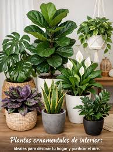

Plantas Ornamentales
Las plantas ornamentales son aquellas que se cultivan principalmente por su belleza y valor decorativo. Estas plantas pueden ser utilizadas para embellecer jardines, interiores de hogares, oficinas y espacios públicos. A continuación, se presentan algunas de las plantas ornamentales más populares:
- Orquídea
- Gerbera
- Pensamiento

Estas plantas no solo aportan belleza a los espacios, sino que también pueden mejorar la calidad del aire y proporcionar un ambiente más relajante. Es importante cuidar adecuadamente las plantas ornamentales, asegurándose de proporcionarles la cantidad adecuada de luz, agua y nutrientes para que puedan prosperar y mantener su belleza.